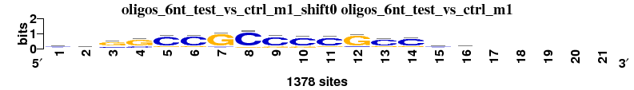
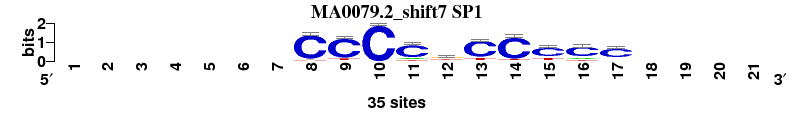
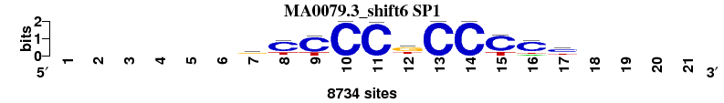

One-to-n alignments
Command: compare-matrices -v 1 -mode matches -format1 transfac -file1 $RSAT/public_html/tmp/apache/2014/10/07/peak-motifs.2014-10-07.150329_2014-10-07.150329_sPZtpE/results/discovered_motifs/oligos_6nt_test_vs_ctrl_m1/peak-motifs_oligos_6nt_test_vs_ctrl_m1.tf -format2 tf -file2 $RSAT/public_html/data/motif_databases/JASPAR/jaspar_core_vertebrates_2013-11.tf -mode matches -DR -uth offset_rank 1 -lth w 5 -lth Wr 0.3 -lth cor 0.75 -lth Ncor 0.4 -return matrix_name,matrix_id,cor,Ncor,logoDP,NIcor,NsEucl,SSD,NSW,match_rank,width,strand,offset,consensus,alignments_1ton -sort Ncor -o $RSAT/public_html/tmp/apache/2014/10/07/peak-motifs.2014-10-07.150329_2014-10-07.150329_sPZtpE/results/discovered_motifs/oligos_6nt_test_vs_ctrl_m1/peak-motifs_oligos_6nt_test_vs_ctrl_m1_vs_db_jaspar_core_vertebrates
One-to-n matrix alignment; reference matrix: oligos_6nt_test_vs_ctrl_m1_shift0 ; 6 matrices ; sort_field=rank_mean
| Matrix name | Aligned logos | cor |
Ncor |
logoDP |
NIcor |
NsEucl |
SSD |
NSW |
rcor |
rNcor |
rlogoDP |
rNIcor |
rNsEucl |
rSSD |
rNSW |
rank_mean |
match_rank |
Aligned matrices |
|---|
| oligos_6nt_test_vs_ctrl_m1_shift0 (oligos_6nt_test_vs_ctrl_m1) |
 |
|
|
|
|
|
|
|
|
|
|
|
|
|
|
|
|
; oligos_6nt_test_vs_ctrl_m1; m=0 (reference); ncol1=16; shift=0; ncol=21; sssgCCGCCCCGCCss-----
; Alignment reference
a 178 210 115 69 64 74 71 36 50 53 76 63 80 71 162 161 0 0 0 0 0
c 601 517 356 308 1049 1061 98 1167 1019 1009 1028 156 951 976 568 541 0 0 0 0 0
g 423 471 827 929 201 178 1129 131 253 246 187 1082 266 251 448 481 0 0 0 0 0
t 176 180 80 72 64 65 80 44 56 70 87 77 81 80 200 195 0 0 0 0 0
|
| MA0079.2_shift7 (SP1) |
 |
0.875 |
0.463 |
2.457 |
0.468 |
0.925 |
0.919 |
0.949 |
1 |
4 |
4 |
3 |
1 |
1 |
1 |
2.143 |
1 |
; oligos_6nt_test_vs_ctrl_m1 versus MA0079.2 (SP1); m=1/5; ncol2=10; w=9; offset=7; strand=D; shift=7; score= 2.1429; -------CCCCkCCCCC----
; cor=0.875; Ncor=0.463; logoDP=2.457; NIcor=0.468; NsEucl=0.925; SSD=0.919; NSW=0.949; rcor=1; rNcor=4; rlogoDP=4; rNIcor=3; rNsEucl=1; rSSD=1; rNSW=1; rank_mean=2.143; match_rank=1
a 0 0 0 0 0 0 0 0 0 0 4 2 0 1 0 6 3 0 0 0 0
c 0 0 0 0 0 0 0 32 30 35 27 5 28 31 24 25 26 0 0 0 0
g 0 0 0 0 0 0 0 1 1 0 0 15 1 0 3 0 3 0 0 0 0
t 0 0 0 0 0 0 0 2 4 0 4 13 6 3 8 4 3 0 0 0 0
|
| MA0599.1_shift6 (KLF5) |
 |
0.817 |
0.510 |
2.976 |
0.498 |
0.912 |
1.544 |
0.923 |
4 |
1 |
1 |
1 |
4 |
4 |
4 |
2.714 |
2 |
; oligos_6nt_test_vs_ctrl_m1 versus MA0599.1 (KLF5); m=2/5; ncol2=10; w=10; offset=6; strand=D; shift=6; score= 2.7143; ------gCCMCrCCCh-----
; cor=0.817; Ncor=0.510; logoDP=2.976; NIcor=0.498; NsEucl=0.912; SSD=1.544; NSW=0.923; rcor=4; rNcor=1; rlogoDP=1; rNIcor=1; rNsEucl=4; rSSD=4; rNSW=4; rank_mean=2.714; match_rank=2
a 0 0 0 0 0 0 1429 0 0 3477 0 5051 0 0 0 3915 0 0 0 0 0
c 0 0 0 0 0 0 2023 11900 12008 9569 13611 0 13611 13611 13135 5595 0 0 0 0 0
g 0 0 0 0 0 0 7572 0 0 0 0 5182 0 0 0 0 0 0 0 0 0
t 0 0 0 0 0 0 2587 1711 1603 565 0 3378 0 0 476 4101 0 0 0 0 0
|
| MA0079.3_shift6 (SP1) |
 |
0.839 |
0.494 |
2.917 |
0.480 |
0.917 |
1.373 |
0.931 |
3 |
3 |
2 |
2 |
3 |
3 |
3 |
2.714 |
3 |
; oligos_6nt_test_vs_ctrl_m1 versus MA0079.3 (SP1); m=3/5; ncol2=11; w=10; offset=6; strand=D; shift=6; score= 2.7143; ------gCCCCkCCCCy----
; cor=0.839; Ncor=0.494; logoDP=2.917; NIcor=0.480; NsEucl=0.917; SSD=1.373; NSW=0.931; rcor=3; rNcor=3; rlogoDP=2; rNIcor=2; rNsEucl=3; rSSD=3; rNSW=3; rank_mean=2.714; match_rank=3
a 0 0 0 0 0 0 857 0 99 0 0 1359 0 0 0 1054 652 0 0 0 0
c 0 0 0 0 0 0 1786 6215 6703 8734 8661 0 8734 8734 6679 6357 4969 0 0 0 0
g 0 0 0 0 0 0 4271 642 0 0 0 4624 0 0 0 0 734 0 0 0 0
t 0 0 0 0 0 0 1820 1877 1932 0 73 2751 0 0 2055 1323 2379 0 0 0 0
|
| MA0516.1_shift6 (SP2) |
 |
0.856 |
0.408 |
2.853 |
0.401 |
0.921 |
1.242 |
0.938 |
2 |
5 |
3 |
4 |
2 |
2 |
2 |
2.857 |
4 |
; oligos_6nt_test_vs_ctrl_m1 versus MA0516.1 (SP2); m=4/5; ncol2=15; w=10; offset=6; strand=D; shift=6; score= 2.8571; ------gyCCCGCCyCyyccs
; cor=0.856; Ncor=0.408; logoDP=2.853; NIcor=0.401; NsEucl=0.921; SSD=1.242; NSW=0.938; rcor=2; rNcor=5; rlogoDP=3; rNIcor=4; rNsEucl=2; rSSD=2; rNSW=2; rank_mean=2.857; match_rank=4
a 0 0 0 0 0 0 160 39 52 0 0 174 0 0 0 206 115 187 226 228 203
c 0 0 0 0 0 0 253 811 1386 1679 1643 0 1686 1656 1108 1196 971 554 717 794 745
g 0 0 0 0 0 0 1028 257 1 7 0 1280 0 0 0 0 99 325 401 408 422
t 0 0 0 0 0 0 245 579 247 0 43 232 0 30 578 284 501 620 342 256 316
|
| MA0039.2_rc_shift6 (Klf4_rc) |
 |
0.793 |
0.496 |
1.341 |
-0.002 |
0.907 |
1.743 |
0.913 |
5 |
2 |
5 |
5 |
5 |
5 |
5 |
4.571 |
5 |
; oligos_6nt_test_vs_ctrl_m1 versus MA0039.2_rc (Klf4_rc); m=5/5; ncol2=10; w=10; offset=6; strand=R; shift=6; score= 4.5714; ------gCCmCrCCCw-----
; cor=0.793; Ncor=0.496; logoDP=1.341; NIcor=-0.002; NsEucl=0.907; SSD=1.743; NSW=0.913; rcor=5; rNcor=2; rlogoDP=5; rNIcor=5; rNsEucl=5; rSSD=5; rNSW=5; rank_mean=4.571; match_rank=5
a 0 0 0 0 0 0 932 289 125 2042 34 2139 16 13 6 1765 0 0 0 0 0
c 0 0 0 0 0 0 280 3789 3902 2179 4273 11 4281 4304 4237 1022 0 0 0 0 0
g 0 0 0 0 0 0 2858 130 46 80 15 1922 36 13 9 81 0 0 0 0 0
t 0 0 0 0 0 0 254 123 264 42 22 277 14 14 88 1468 0 0 0 0 0
|
{kind=link}
{kind=link}
{kind=link}